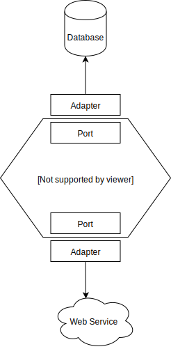

Design for Testability
Introduction
We just learned how the use of mocks and stubs can help developers in being highly productive and efficient in writing test code.
In our previous chapter, it was easy to pass an IssuedInvoices stub to the InvoiceFilter class. The refactoring operation we performed (where we made the class receive its dependencies via constructors) facilitated the testing of the InvoiceFilter class.
Note, however, that this was not the case at the beginning of that chapter. We had to refactor the code for that to happen.
Software systems are often not ready/prepared to be tested, as seen in the classes in our previous chapter. And so this chapter will show how to design and build a software system in a way that increases its testability.
Testability is the term used to describe how easy it is to write automated tests for the system, class, or method to be tested. We already know that automated tests are crucial for high-quality software; it is, therefore, essential that our code is testable.
In this chapter, we'll discuss some design practices that increase the testability of software systems. This idea is referred to as design for testability. Specifically it involves:
- Dependency injection;
- The separation between domain and infrastructure code;
- Implementation-level tips.
Dependency injection
Dependency injection is a design choice we can use to make our code more testable. We will illustrate what dependency injection is by means of this analogy:
We need a hammer to perform a certain task. When we are asked to do this task, we find the hammer by ourselves and once we have the hammer, we use it to perform the task. However, another approach is to say that, while we still need a hammer when someone asks us to perform the task, instead of getting the hammer ourselves, we get it from the person that wants us to do the task.
We can do the same when managing the dependencies in our systems. Simply put, instead of the class instantiating the dependency itself, the class asks for the dependency (via constructor or a setter, for example).
But let's revisit how we applied this idea in the previous chapter.
Let's assume that the InvoiceFilter was implemented as follows:
public class InvoiceFilter {
public void filter() {
IssuedInvoices dao = new IssuedInvoices();
// ...
}
}
In our analogy, the InvoiceFilter (the worker) itself instantiates (searches for) the IssuedInvoices (hammer) class.
With an implementation like this, there is no easy way to pass any mocks to the InvoiceFilter.
Any test code we devise will necessarily use a concrete instance of IssuedInvoices. As we know, IssuedInvoices goes to a database, which is something we have been trying to avoid.
Thus, we cannot control the way the IssuedInvoice operates, at least for testing purposes.
This makes it harder for developers to write automated tests.
Instead, we can design our class in a way that it allows dependencies to be injected. Note how we receive the dependency via constructor now:
public class InvoiceFilter {
private final IssuedInvoices issuedInvoices;
public InvoiceFilter(IssuedInvoices issuedInvoices) {
this.issuedInvoices = issuedInvoices;
}
public void lowValuedInvoices() {
// ...
}
}
In this new implementation, we can now instantiate
the InvoiceFilter class and pass it a mocked/stubbed version of IssuedInvoices in the test code.
This simple change in the design of the class makes the creation of automated tests easier and, therefore, increases the testability of the code.
Note that with such a design decision, the InvoiceFilter class also enables the production code to pass a concrete instance of
IssueInvoices. After all, when the program is running "for real", we want the real implementation of IssuedInvoices to work.
More formally, Dependency injection is a technique where one object supplies the required dependencies of the another object. As in our example, whenever a client decides to make use of InvoiceFilter, it will have to also supply an IssuedInvoice. The term "injection" is about "injecting" a dependency, in this case the IssuedInvoice, to another class, in this case InvoiceFilter.
The use of dependency injection improves our code in many ways:
- It enables us to mock/stub the dependencies in the test code, increasing the productivity of the developer during the testing phase.
- It makes all the dependencies more explicit; after all, they all need to be injected (via constructor, for example).
- It affords better separation of concerns: classes now do not need to worry about how to build their dependencies, as they are injected to them.
- The class becomes more extensible. As a client of the class, you can pass any dependency via the constructor. Suppose a class depends on a type
A(and receives it via constructor). As a client, you can passAor any implementation ofA, e.g., ifAisList, you can passArrayListorLinkedList. Your class can now work with many different implementations ofA.
If you want to understand more advanced OOP concepts, we suggest reading more about:
- The Open-Closed Principle;
- Inversion of Control;
- Separation of concerns.
Domain vs infrastructure
A general recommendation to design for testability comes down to separating domain from infrastructure.
The domain is where the core of the system lies, i.e. where all the business rules, logics, entities, services, etc, reside.
Throughout this book we have been using business systems as examples. Entities like Invoice, ChristmasDiscountCalculator
are examples of domain classes.
Infrastructure relates to all code that handles some infrastructure. For example, pieces of code that handle database queries, or webservice calls, or file reads and writes. In our examples, all our Data Access Objects are part of what we call infrastructure code.
We observe that, when domain code and infrastructure code are mixed up together, the system becomes harder to test.
Let us go back to our InvoiceFilter example with it now containing the SQL logic, instead of it depending on a Data Access Object:
public class InvoiceFilter {
// accessing the database
private List<IssuedInvoice> all() {
Connection connection = DriverManager.getConnection("db", "root", "");
return withSql( () -> {
try (var ps = connection.prepareStatement("select * from invoice")) {
final var rs = ps.executeQuery();
List<Invoice> allInvoices = new ArrayList<>();
while (rs.next()) {
allInvoices.add(new Invoice(rs.getString("name"), rs.getInt("value")));
}
return allInvoices;
}
});
connection.close();
}
public List<Invoice> lowValueInvoices() {
var issuedInvoices = all();
return issuedInvoices.all().stream()
.filter(invoice -> invoice.value < 100)
.collect(toList());
}
}
We can make the following observations about the code above:
- The code is less cohesive. It knows how to extract data from the database and it also knows the "low value invoices" business rule. This class now requires test cases that cover both responsibilities.
- Domain code and infrastructure code are mixed up. This means a tester will not be able to avoid database access when testing the "low value invoices" rule. As we have seen many times already, this will incur higher costs.
- This new version of the
InvoiceFilterclass is definitely more complex than our previous version and complex code are more prone to defects.
Our previous version was indeed better. It was more cohesive and simpler. More importantly it also had a clear separation between domain code and infrastructure code. This is what software developers should always do when they design systems in order to ensure these two responsibilities are separated from each other.
This idea of separating infrastructure and domain is explored in the following literature:
- In the Ports and Adapters (also called the Hexagonal Architecture) idea, as proposed by Alistair Cockburn, the domain (business logic) depends on "Ports", rather than directly on the infrastructure. These ports are interfaces that define what the infrastructure is able to do. These ports are completely separated from the implementation of the infrastructure. The "adapters", on the other hand, are very close to the infrastructure. These are the implementations of the ports that talk to the database, webservice, etc. They know how the infrastructure works and how to communicate with it.
In the schema below, you can see that the ports are part of the domain.

Ports and Adapters help us a lot with the testability of our code. If our core domain depends only on ports, we can easily stub/mock them.
- In his Domain-Driven Design work, Eric Evans proposes that the domain (the core of the system) will be isolated from the infrastructure layer. Besides all the design benefits that Eric cites in his book, testers benefit from this separation, as it enables them to exercise parts of code without having to depend on heavy infrastructure.
In practice, we observe that separating the infrastructure from domain is often challenging. The database example, where we move all the code to another class, is rather a simplistic one. When building software, we frequently rely on different libraries and frameworks that are often opinionated and require you to follow certain design decisions that might not be ideal, from a testability perspective. It is the duty of a developer to be able to abstract these problems, making sure that the domain concerns are always separated from the infrastructure concerns.
You see developers vouching for domain objects not to depend on concrete implementations of the infrastructure code, but rather, to depend solely on abstractions. In our example, the InvoiceFilter domain object, instead of depending on a concrete implementation of IssuedInvoices (one that right now contains SQL code and knows how to communicate with the database), it would depend on an abstraction/interface.
By devising interfaces that represent the abstract interaction that domains and infrastructure classes will have with each other, the developer ends up separating the concerns in a better way, reducing the coupling between both layers, and devising simpler flows of interactions between both layers.
The dependency inversion principle (note the inversion and not injection) helps us to formalise these concepts:
- High-level modules should not depend on low-level modules. Both should depend on abstractions (e.g. interfaces).
- Abstractions should not depend on details. Details (concrete implementations) should depend on abstractions.
Implementation-level tips on designing for testability
We end this chapter with a couple of practical tips that will help you to devise testable systems/classes:
- Cohesion and testability: cohesive classes are classes that do only one thing. Cohesive classes tend to be easier to test. This is because fewer responsibilities imply fewer test cases and fewer responsibilities often imply fewer dependencies (as you need fewer to compose the required functionality) which in turn incurs lower testing costs.
On the other hand, a non-cohesive class tends to consume a large amount of testing effort from developers. You might notice that a non-cohesive class requires so many test cases, that you often feel like "the testing is never-ending".
Refactoring non-cohesive classes is therefore an important task when it comes to testability. A common way to do this is by splitting the non-cohesive class into several smaller-but-cohesive classes. Each small class can then be tested separately, and the class that combines them might rely either on mock objects to assert the correctness of the interactions among the dependencies or on an integration test (or both).
- Coupling and testability: Coupling refers to the number of classes that a class depends on. A highly coupled class requires several other classes to do its work. Coupling decreases testability. A tester trying to test a highly dependent class ends up having to test all its dependencies together. If the tester then decides to use stubs/mocks, the costs of setting them up will also be higher than it needed to be (just imagine yourself setting up 10 or 15 stubs/mocks to test a single class). Moreover, the number of test cases that would be required to achieve a minimum amount of coverage is too high, as each dependency probably brings together a whole set of requirements and conditions.
Reducing coupling, however, is often tricky, and maybe one of the biggest challenges in software design. A common coupling-related refactoring is to group dependencies together into a higher and meaningful abstraction. Imagine that class A depends on B, C, D and E. After inspection, you notice that B interacts with C, and D interacts with E. Devising a new class that handles the communication between B and C (let us call it BC), and other one that handles the communication between D and E (let us call it DE), already reduces A's coupling. After all, it now depends only on BC, and DE. In general, pushing responsibilities and dependencies to smaller classes and later connecting them via larger abstractions is the way to go.
- Complex conditions and testability: We have seen in previous chapters that conditions that are very complex (e.g., an
ifstatement composed of multiple Boolean operations) require great effort from testers. For example, the number of tests one might devise after applying some boundary testing or condition+branch coverage criteria might be too high.
Reducing the complexity of such conditions, for example by breaking it into multiple smaller conditions, will not reduce the overall complexity of the problem, but will "spread" it.
- Private methods and testability: A common question among developers is whether to test private methods or not. In principle, testers should test private methods only through their public methods. However, testers often feel the urge to test a particular private method in isolation. One common cause for this feeling is the lack of cohesion or the complexity of this private method. In other words, this method does something so different to the public method, and/or its task is so complex, that it has to be tested separately. This is a good example of when "the test speaks to the developer" (a common saying among Test-Driven Developers).
In terms of the design this might mean that this private method does not belong in its current place. A common refactoring is to extract this method, maybe to a new brand new class. There, the former private method, now a public method, can be tested normally by the developer. The original class, where the private method used to be, should now depend on this new class.
- Static methods and testability: As we have seen before, static methods adversely affect testability, as they can not be stubbed easily. Therefore, a good rule of thumb is to avoid the creation of static methods whenever possible. Exceptions to this rule are utility methods. As we saw before, utility methods are often not mocked.
If your system has to depend on a specific static method, e.g., because it comes with the framework your software depends on, adding an abstraction on top of it, similar to what we did with the Calendar class in the previous chapter, might be a good decision to facilitate testability.
The same recommendation applies when your system needs code from others or external dependencies. Again, creating layers/classes that abstract away the dependency might help you in increasing testability. We emphasise that developers should not be afraid to create these extra layers. While it might seem that these layers will increase the overall complexity of the design, the increased testability pays off.
Finally, note how there is a deep synergy between well designed production code and testability. We repeat that focusing only on testing techniques (like the ones we discussed in the Testing Techniques section of this book), or only on design techniques (like the ones we have been focusing on in this section of the book), is not enough. High-quality software is only achieved when software systems are designed with testability in mind, and rigorous testing techniques are applied.
Exercises
Exercise 1.
How can we improve the testability of the OrderDeliveryBatch class?
public class OrderDeliveryBatch {
public void runBatch() {
OrderDao dao = new OrderDao();
DeliveryStartProcess delivery = new DeliveryStartProcess();
List<Order> orders = dao.paidButNotDelivered();
for (Order order : orders) {
delivery.start(order);
if (order.isInternational()) {
order.setDeliveryDate("5 days from now");
} else {
order.setDeliveryDate("2 days from now");
}
}
}
}
class OrderDao {
// accesses a database
}
class DeliveryStartProcess {
// communicates with a third-party webservice
}
Which techniques can we apply? What would the new implementation look like? Think about what you would need to include in order to test the OrderDeliveryBatch class.
Exercise 2. Consider the following requirement and implementation.
A webshop gives a discount of 15% on King's Day.
public class KingsDayDiscount {
public double discount(double value) {
Calendar today = Calendar.getInstance();
boolean isKingsDay = today.get(MONTH) == Calendar.APRIL
&& today.get(DAY_OF_MONTH) == 27;
return isKingsDay ? value * 0.15 : 0;
}
}
We want to create a unit test for this class.
Why does this class have bad testability? What can we do to improve the testability? I.e. why is it difficult to test the method?
Exercise 3. Sarah has joined a mobile app team that has been trying to write automated tests for a while. The team wants to write unit tests for part of their code, but "that's really hard", according to the developers.
After some code review, the developers themselves listed the following problems in their codebase:
- Many classes mix infrastructure and business rules;
- The database has large tables and no indexes;
- Use of static methods;
- Some classes have too many attributes/fields.
To increase the testability, the team has a budget to work on two out of the four issues above. Which items should Sarah recommend them to tackle first?
Note: All of the four issues should obviously be fixed. However, try to prioritise the two most important ones: which influence the testability the most?
Exercise 4. Observability and controllability are two important concepts when it comes to software testing. Three developers could benefit from improving either the observability or the controllability of the system/class which they are testing but each developer encounters a problem:
- "I can't really assert that the method under test worked well."
- "I need to make sure this class starts with that Boolean set to false, but I simply can't do it."
- "I just instantiated the mock object, but there's no way to inject it in the class."
State for each of the problems above whether it relates to observability or controllability.
References
Cockburn, Alistair. The Hexagonal Architecture. https://wiki.c2.com/?HexagonalArchitecture
Hevery, Misko. The Testability Guide. http://misko.hevery.com/attachments/Guide-Writing%20Testable%20Code.pdf
Michael Feathers. The deep synergy between well design production code and testability. https://www.youtube.com/watch?v=4cVZvoFGJTU
Martin, Robert C. The Dependency Inversion Principle. C++ Report. Archived from the original (PDF) on 2011-07-14: https://web.archive.org/web/20110714224327/http://www.objectmentor.com/resources/articles/dip.pdf